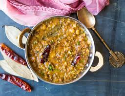

Dal Panchmel
Description
Dal Panchmel is a flavorful and hearty dish from Rajasthani cuisine, known for its rich blend of five different types of lentils. The name "Panchmel" comes from the word "panch", meaning five, and "mel", meaning mixture. This delicious, protein-packed dal combines the earthy flavors of a variety of lentils, resulting in a hearty and wholesome dish that is both comforting and nutritious.
The five lentils traditionally used in Dal Panchmel are toor dal (yellow pigeon peas), moong dal (yellow split mung beans), masoor dal (red lentils), chana dal (split chickpeas), and urad dal (black gram). These lentils are cooked together with a variety of aromatic spices, including cumin, coriander, turmeric, garam masala, and asafoetida (hing). The dal is typically tempered with ghee (clarified butter), which imparts a rich and luxurious flavor, along with fried garlic, ginger, and green chilies for an added punch of heat and flavor. The dish is often garnished with fresh coriander leaves and served with roti (Indian flatbread) or rice.
Dal Panchmel is a staple in Rajasthani households and is often enjoyed as part of a larger meal. It offers a perfect balance of flavors—earthy, spicy, and slightly tangy, with the ghee enhancing its richness. The combination of lentils not only gives it a complex and satisfying taste but also makes it an excellent source of protein, making it a wholesome and fulfilling vegetarian dish. Whether enjoyed for lunch or dinner, Dal Panchmel is a comforting, nourishing, and flavorful dish that showcases the vibrant culinary traditions of Rajasthan.
Ingredients
- Toor dal (yellow pigeon peas) – 1/4 cup
- Moong dal (yellow split mung beans) – 1/4 cup
- Masoor dal (red lentils) – 1/4 cup
- Chana dal (split chickpeas) – 1/4 cup
- Urad dal (black gram) – 1/4 cup
- Ghee (clarified butter) – 2 tablespoons (or oil, if you prefer)
- Cumin seeds – 1 teaspoon
- Asafoetida (hing) – a pinch
- Ginger – 1-inch piece, finely grated
- Garlic – 4-5 cloves, finely chopped
- Green chilies – 2, slit lengthwise
- Tomato – 1 large, chopped (optional)
- Turmeric powder – 1/2 teaspoon
- Red chili powder – 1/2 teaspoon (optional)
- Garam masala – 1 teaspoon
- Coriander powder – 1 teaspoon
- Salt – to taste
- Water – about 4-5 cups (adjust for desired consistency)
- Fresh coriander leaves – for garnishing
- Lemon juice – 1 tablespoon (optional)
- Wash and Soak the Lentils: Rinse all the lentils (toor dal, moong dal, masoor dal, chana dal, and urad dal) thoroughly under cold water. Soaking the lentils for 30 minutes to 1 hour can help them cook faster and make the dal more tender, but it's optional.
- Cook the Lentils: In a large pot or pressure cooker, add the soaked lentils and 4-5 cups of water. Bring the water to a boil and cook the lentils until they are soft and fully cooked. If using a pressure cooker, cook for about 3-4 whistles, then turn off the heat and let the pressure release naturally. If cooking in a regular pot, it may take 20-25 minutes. Mash the cooked dal slightly to break it up, but leave it somewhat chunky for texture.
- Prepare the Tempering (Tadka): Heat the ghee (clarified butter) (or oil) in a pan over medium heat. Add the cumin seeds and let them splutter. Add the asafoetida (hing) for extra flavor. Stir in the grated ginger, garlic, and slit green chilies, frying for 2-3 minutes until they turn golden and fragrant. Add the chopped tomatoes (if using) and cook until they soften and blend into the mixture. Then, add the turmeric powder, red chili powder, coriander powder, and garam masala. Stir well and cook for another 2 minutes to let the spices bloom.
- Combine the Dal and Tempering: Add the cooked lentils to the pan with the tempering. Stir everything together and simmer for 5-10 minutes to allow the flavors to meld. If the dal is too thick, you can add more water to achieve your desired consistency.
- Season and Garnish: Add salt to taste and adjust the seasoning if necessary. You can also squeeze in a bit of lemon juice at this point for added tang. Garnish with fresh coriander leaves.
- Serve: Serve the Dal Panchmel hot with steamed rice or Indian bread (roti, naan, or paratha). It’s perfect as a main dish for lunch or dinner, and you can pair it with a side of pickles or a yogurt-based salad for added flavor.